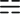

<!-- <app-navbar-component></app-navbar-component> -->
<ng-sidebar-container> 
      <ng-sidebar [opened]="opened"> <p>Side Bar Content</p>
        <button (click)="toggleSidebar()">close Sidebar</button>
           <ul class="menu">
              <li><a routerLink="/primeirocomponent" (click)="toggleSidebar()">Dashboard</a></li>
              <li><a routerLink="/segundocomponent" (click)="toggleSidebar()">Posts</a></li>
              <li><a routerLink="/terceirocomponent" (click)="toggleSidebar()">Contact</a></li>
              <li><a routerLink="/quartocomponent" (click)="toggleSidebar()">quartaOpcao</a></li>
              <li><a routerLink="/quintocomponent" (click)="toggleSidebar()">quintaOpcao</a></li>
              <li><a routerLink="/" (click)="toggleSidebar()">Voltar</a></li>
             </ul>
        </ng-sidebar>
          <div ng-sidebar-content>
            <div class="teste">
            <button (click)="toggleSidebar()">
                
            </button>
            </div>
            <router-outlet></router-outlet>
          </div>
  </ng-sidebar-container>